Contacts
Telegram@nihil_aluid
Mailmaggieart007@gmail.com
Linkedinwww.linkedin.com/in/margarita-remneva-602923229

This is a lemon curd made by hand, in small batches, for close friends and family.
It's a home-grown creation — infused with warmth, sun, and the quiet comfort of shared moments.
Golden light, soft textures, and a hint of nostalgia define the mood of this brand.
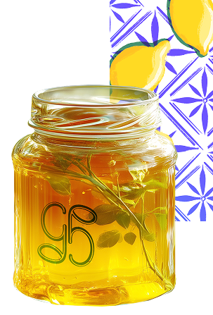
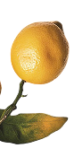
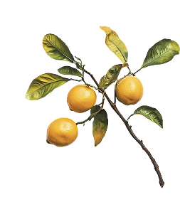
In a world full of mass-produced jars on supermarket shelves, this small home workshop wanted its own gentle voice. The goal was to create a visual identity that feels as warm and personal as the product itself — something that captures golden afternoon light, the softness of homemade curd and the joy of giving a little jar of summer to someone you care about.
People who cherish slow, mindful moments: women and men 28–45 who love natural homemade things, small pleasures and the feeling that something was made with care just for them.
Bottle a piece of summer and the feeling of home — so that every time you open the jar, you remember the taste of sunshine and quiet happiness.
I noticed how people today crave something real and warm in their kitchens. Small-batch homemade treats are becoming more and more treasured because they bring back memories of childhood, family tables and sunny afternoons. The challenge was to turn this tiny workshop into a brand that feels like a gift from a dear friend rather than just another product.
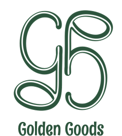
At the heart of the visual identity is a gentle monogram — two letters from the brand name Golden Goods, intertwined to reflect simplicity, care, and timeless charm.
Every detail is meant to feel like home: the folds of a scarf, the creamy texture of curd, the softness of morning light falling on a jar.
This project is an attempt to capture those fleeting sunlit moments in a visual language — to bottle up a piece of summer and share it.
The color palette is a soft reflection of summer — yellow for lemons and sunlight, beige for homemade warmth, green for freshness and natural origin, blue for calmness and a touch of vintage charm.
The pattern combines hand-drawn lemons and leaves with delicate blue ornamental shapes. Drawn entirely by hand, it brings a personal, crafted touch that appears across packaging and textiles, creating a cozy, sunny world.
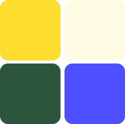
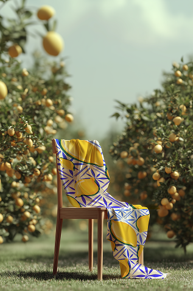
The pattern combines hand-drawn lemons and leaves with delicate blue ornamental shapes in the background. It brings together the freshness of fruit with a nostalgic, almost vintage charm — like a sunny afternoon in a countryside kitchen.
Drawn entirely by hand, the pattern adds a personal, homemade touch. It appears across packaging and textiles, creating a soft, warm atmosphere that feels both crafted and comforting.
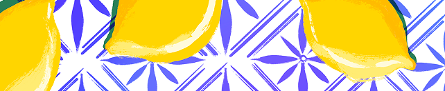
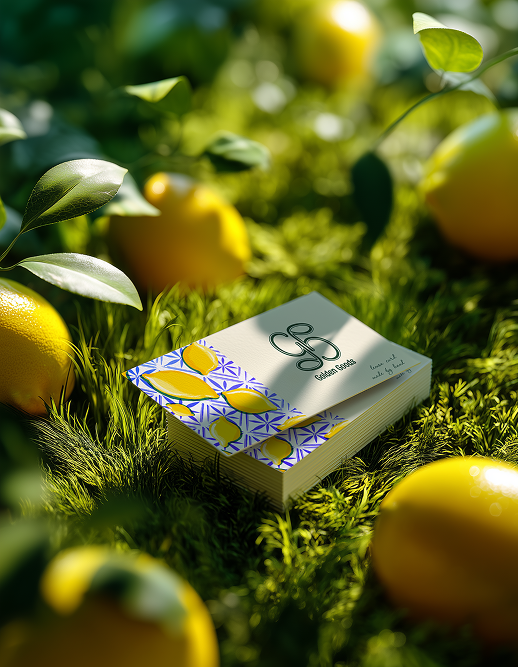
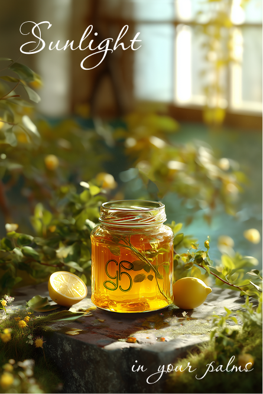
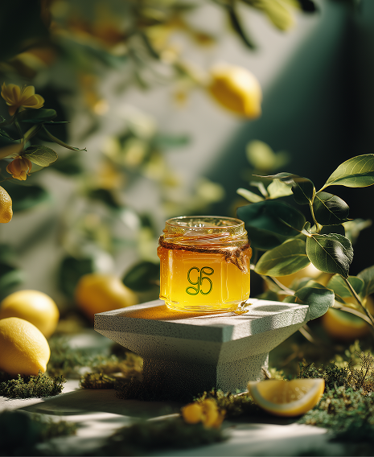
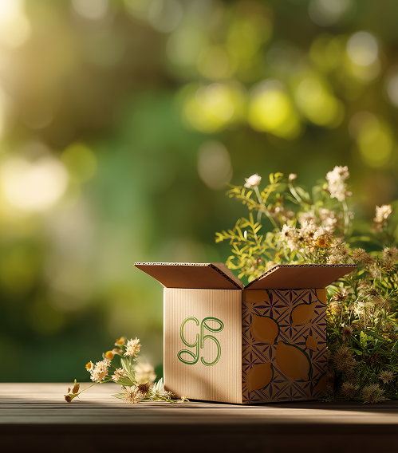
I'm a Design Strategist & Concept Designer with 6 years of experience across advertising agencies and major banking/fintech projects.
I focus on turning abstract business goals into clear, emotionally engaging visual systems and brand languages. I've helped brands shift audience perception, strengthen long-term loyalty and successfully launch new products and directions — always starting with one key question: what needs to change in how people think, feel, or act?
I make strategic decisions at the intersection of business logic and human emotion, whether the goal is to build loyalty in competitive financial markets, attract new audiences or communicate complex ideas in a simple and meaningful way.
I'm looking to be a thinking partner within a team — bringing clarity, direction and hands-on strategic experience, not just execution.
I believe strong brands are born where deep strategy meets genuine emotion.